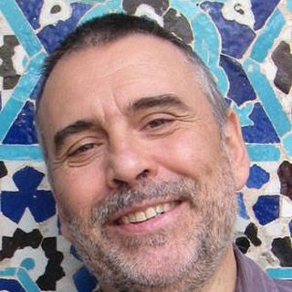

Last talks
Seminar and talk archive →Recycle your heterodimensional cycle: an ergodic approach
Katrin Gelfert — UFRJ, Brazil
We define the concept of heterodimensional cycles between hyperbolic ergodic measures of different indices. We study what impact the existence of such a cycle has on the topological properties of the space of invariant measures and present some examples. This is joint work with L. Díaz and Ch. Bonatti.
Room 2-2, Institute of Mathematics
Lower bounds for the entropy of the non-hyperbolicity locus

Lorenzo Díaz — PUC-Rio, Brazil
En el contexto de dinámicas parcialmente hiperbólicas que admiten medidas ergódicas con exponentes de Lyapunov positivos, negativos y nulos, estudiaremos el conjunto de puntos que tienen algún exponente de Lyapunov nulo. En particular, presentaremos cotas inferiores de carácter dinámico para la entropía topológica de este conjunto. Trabajo en colaboración con R. Ures, D. Wang y J. Yang.
Room 2-2, Institute of Mathematics
Recent events
All events →2nd LESET Workshop — Lyapunov Exponents and Smooth Ergodic Theory II
Who we are
Learn more about the group →The group originated from the Dinámica Porteña permanent seminar, started in 2008 at the Institute of Mathematics of the Pontifical Catholic University of Valparaíso and consolidated over nearly twenty years as a stable space for scientific collaboration. Its main interests are research collaboration, training researchers, and scientific outreach to society.